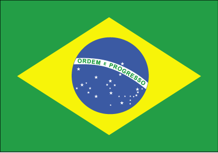

Bangladesh

Bangladesh officially the People's Republic of Bangladesh, is a country in South Asia. It is the eighth-most populous country in the world, with a population exceeding 165 million people in an area of either 148,460 square kilometres (57,320 sq mi) or 147,570 square kilometres (56,980 sq mi),[7][14] making it one of the most densely populated countries in the world.Bangladesh is a Muslim Country
Most Beautiful Place in Bangladesh
Afghanistan

Afghanistan, officially the Islamic Republic of Afghanistan, is a mountainous, landlocked country in South-Central Asia at an important geopolitical location, it connects the Middle East with Central Asia and the Indian subcontinent.It is bordered by Iran, Pakistan, Tajikistan, Turkmenistan, and Uzbekistan, it has a short border in the Wakhan Corridor panhandle with Xinjiang, an autonomous region of China
Brazil

Destination "Brasil," a Nations Online Project profile of the country that occupies about 50% of South America. Brazil is located in the central-eastern part of the continent, by far the largest portion of it lies south of the equator.Border countries are Argentina, Bolivia, Colombia, French Guiana, Guyana, Paraguay, Peru, Suriname, Uruguay, and Venezuela. The country has an almost 7,500 km long coastline at the Atlantic Ocean.